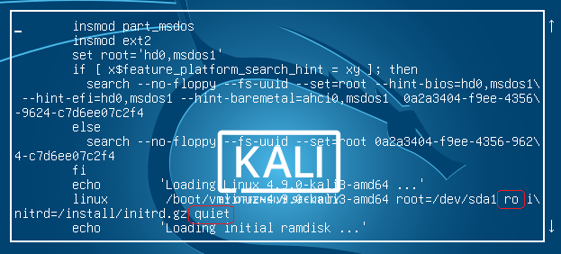

Kali
1) 在 default boot menu 上 press "e".
2) 修改 "ro" to "rw", "quiet" to "init=/bin/bash".
3) Ctrl-x to boot.
4) Use cmd "mount" to check if it is "rw".
5) Use cmd "passwd" to reset password.
6) Use cmd "exec /sbin/init" to reboot your system.